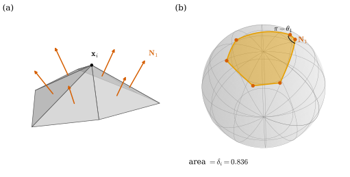
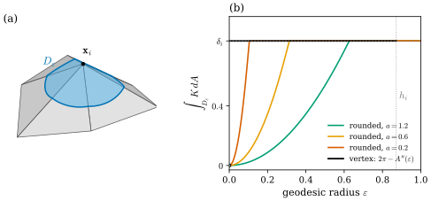
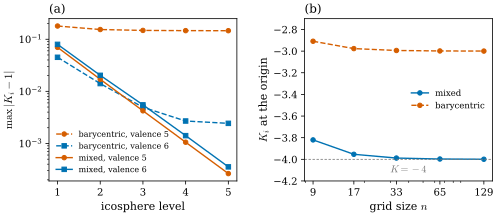

40.1 Angle Defect and Discrete Gaussian Curvature
Goals
- mesh 위의 기본 양(\(\mathbf{x}_i\), \(e_{ij}\), \(\ell_{ij}\), \(A_f\), \(\mathbf{N}_f\), corner angle, bending angle, dual area)이 smooth surface의 무엇을 적분한 값인지 말할 수 있다.
- angle defect를 정의하고, convex vertex에서 그것이 둘레 face normal들이 이루는 spherical polygon의 넓이임을 Girard's formula로 증명할 수 있다.
- vertex 둘레의 작은 geodesic disk의 넓이를 정확히 계산하고, angle defect가 그 disk 안의 Gaussian curvature의 적분이라는 뜻을 설명할 수 있다.
- discrete Gaussian curvature \(K_i = \delta_i/A_i\)를 계산하고, dual area의 선택과 다른 근사(quadric fitting)가 무엇을 바꾸는지 말할 수 있다.
Prerequisites
- Chapter 39: geodesic disk의 넓이 Theorem 39.3.5, Gauss–Bonnet theorem with boundary Theorem 39.4.4, surface of revolution의 cap Proposition 39.4.6, bending angle Definition 39.5.5, Proposition 39.5.6.
- Chapter 38: discrete immersion Definition 38.4.7, Proposition 38.4.9, discrete Gauss map Definition 38.5.1, vertex 둘레의 spherical polygon Proposition 38.5.2, dual cell과 dual area Definition 38.5.4, edge length와 각 Proposition 38.6.1.
- Chapter 36: integrated quantity(Section 36.1), circumcentric dual cell의 넓이 Corollary 36.5.11. Chapter 33: \(\chi = n_0 - n_1 + n_2\)(Section 33.4).
- Track 1: angle defect를 소개한 Section 31.2, Example 0.5.9.
Motivation
Chapter 39는 질문 하나로 끝났다. polyhedral surface에서는 face 안이 평평하므로 \(K = H = 0\)이고, curvature는 vertex와 edge에 몰려 있다(Theorem 39.3.5 뒤의 Smooth vs. Discrete 상자). 점마다의 값으로는 그것을 잴 수 없다. vertex에서 \(K\)는 “무한대”이고 나머지에서는 \(0\)이다. 그렇다면 curvature를 어떻게 정의해야 smooth 이론의 정리, 특히 Gauss–Bonnet theorem이 근사가 아니라 정확히 성립하는가?
이 장의 답은 적분한 양을 쓰는 것이다. smooth surface에서 curvature를 vertex 둘레의 작은 영역 위에서 적분하면, 그 적분은 vertex에 점이 몰려 있어도 유한한 값이다. Chapter 36에서 discrete form을 “cell 위의 적분값”으로 정의한 것과 같은 생각이다(Section 36.1). 이 절은 Gaussian curvature부터 한다. 그 discrete 판이 angle defect이고, 세 가지 서로 다른 smooth 특징(Gauss map의 넓이, 작은 원판의 넓이, Gauss–Bonnet)이 모두 같은 수를 준다는 것을 보인다 [CMU-DDG L16].
Quantities on a Mesh
먼저 이 장 전체에서 쓰는 양을 정리한다. 이 장의 mesh는 orientation이 있는 simplicial surface 위의 discrete immersion \(\mathbf{x}\)(Definition 38.4.7)이고, face \(f = (i, j, k)\)는 그 orientation 순서로 쓴다. 닫힌 mesh에서는 face normal이 바깥쪽을 향한다(Notation and Conventions). 아래 표의 셋째 열은 각 양이 smooth surface에서 무엇을 적분하거나 읽은 값인지를 적은 것이다. 강의 슬라이드도 이 기본 양들을 늘어놓고 그 가운데 어느 것이 discrete differential form인지를 묻는다 [CMU-DDG L16] slide 7. 표와 그 아래 문단이 이 study set의 답이다.
| quantity | lives on | what it measures |
|---|---|---|
| \(\mathbf{x}_i\) | vertex | \(\mathbf{x}\)의 값(0-form) |
| \(e_{ij} = \mathbf{x}_j - \mathbf{x}_i\) | oriented edge | \(\int_{ij}d\mathbf{x}\)(1-form) |
| \(\ell_{ij} = \abs{e_{ij}}\) | edge | 길이(측도) |
| \(A_f\mathbf{N}_f\), \(A_f\) | face | \(\int_f\mathbf{N}\,dA\), \(\int_fdA\)(2-form) |
| \(\mathbf{N}_f\) | face = dual vertex | \(\mathbf{N}\)의 값(dual 0-form) |
| \(\theta_i^{jk}\) | corner \((i, f)\) | 내각 |
| \(\theta_{ij}\) | interior edge | \(\mathbf{N}\)이 도는 각 |
| \(A_i = \abs{C_i}\) | dual cell | \(\int_{C_i}dA\)(dual 2-form) |
| \(\delta_i\) | dual cell | \(\int_{C_i}K\,dA\) |
\(e_{ij}\)는 \(i\)와 \(j\)를 바꾸면 부호가 바뀌는 \(d_0\mathbf{x}\)이고, \(\int_f\mathbf{N}\,dA = \tfrac12\int_fd\mathbf{x}\wedge d\mathbf{x}\)이다((38.5.2)). \(\theta_{ij}\)는 bending angle(Definition 39.5.5)이고, \(A_i\)는 \(\star_0\)의 성분이다. \(\delta_i = \int_{C_i}K\,dA\)는 이 절에서 보인다. 표의 양은 거의 모두 integrated quantity다. 점마다의 값이 필요하면 cell의 크기로 나눈다(Hodge star의 역, Definition 36.5.14). 엄밀한 뜻의 discrete form, 곧 cell의 orientation을 뒤집으면 부호가 바뀌는 양(Definition 36.1.6)은 \(\mathbf{x}_i\), \(e_{ij}\), \(A_f\mathbf{N}_f\), \(\mathbf{N}_f\), 그리고 dual cell 위의 \(A_i\)와 \(\delta_i\)다. \(\ell_{ij}\)와 \(\theta_i^{jk}\)는 방향을 모르는 측도다. \(\theta_{ij}\)는 edge의 방향을 바꾸어도 그대로이고 surface의 orientation을 바꿀 때만 부호가 바뀐다(Proposition 39.5.6(c)). 그래서 이것도 Definition 36.1.6의 뜻의 form은 아니다.
The Angle Defect
평면에서 한 점 둘레에 triangle들을 빈틈없이 붙이면 그 점의 각은 합해서 \(2\pi\)다. 휘어진 polyhedral surface에서는 이것이 깨진다. 모자라거나 남는 양을 잰다.
Definition 40.1.1 (angle defect). simplicial surface(boundary가 있어도 된다) 위의 discrete immersion \(\mathbf{x}\)와 vertex \(i\)에 대하여
를 \(i\)의 angle defect(각 결손)라 한다.
interior vertex의 \(\delta_i\)는 star를 한 edge에서 잘라 평면에 펼쳤을 때 남는 틈의 각이다. 틈이 남으면 \(\delta_i \gt 0\)이고, 겹치면 \(\delta_i \lt 0\)이다(Chapter 31의 Figure 31.2.2가 펼친 그림을 보였다). boundary vertex의 값은 boundary polygon이 그 vertex에서 surface 안에서 꺾이는 각이다. 그 뜻은 Section 40.2에서 Gauss–Bonnet theorem with boundary와 함께 본다. corner angle은 law of cosines로 edge length에서 정해지므로(Proposition 38.6.1) \(\delta_i\)는 edge length만의 함수다. 곧 intrinsic하다. 종이를 접거나 말아도 \(\delta_i\)는 그대로다. smooth surface의 \(K\)가 intrinsic하다는 Theorema Egregium의 discrete 판이라 할 수 있다(Section 39.3).
Example 40.1.2 (regular polyhedra, the cube, and a planar grid).
(a) regular tetrahedron의 vertex에는 정삼각형 셋이 모이므로 \(\delta = 2\pi - 3\cdot\tfrac\pi3 = \pi\)이다. octahedron은 넷이 모여 \(\delta = 2\pi - \tfrac{4\pi}{3} = \tfrac{2\pi}{3}\), icosahedron은 다섯이 모여 \(\delta = \tfrac\pi3\)이다. (b) unit cube \([0, 1]^3\)의 정사각형을 대각선으로 나눈 mesh(lib/ddg40.py의 unit_cube)에서 corner에는 정사각형 셋이 모이고, 각 정사각형은 대각선을 어떻게 긋든 그 corner에 각 \(\tfrac\pi2\)를 준다. 그래서 \(\Theta = \tfrac{3\pi}{2}\), \(\delta = \tfrac\pi2\)이다. (c) planar grid(dgmesh.grid_mesh)의 interior vertex는 \(\Theta = 2\pi\)라 \(\delta = 0\)이다. boundary 위에서는 네 모서리가 \(\delta = \pi - \tfrac\pi2 = \tfrac\pi2\)이고, 변 위의 vertex는 \(\Theta = \pi\)라 \(0\)이다. 네 모서리의 합이 \(2\pi\)다(Implementation 상자의 마지막 줄).
Verification: verify/v-40-1-angle-defect.py
Non-example 40.1.3 (a vertex whose link is not a cycle). 두 regular tetrahedron을 vertex 하나에서만 붙인 complex를 보자. 붙인 vertex에는 정삼각형 여섯이 모이므로 (40.1.1)을 그대로 쓰면 \(2\pi - 6\cdot\tfrac\pi3 = 0\)이다. 그러나 그 vertex는 평평하지 않다. 두 tetrahedron은 각자의 꼭짓점에서 \(\pi\)만큼 뾰족하다. 그 vertex의 link는 cycle 하나가 아니라 cycle 둘이므로 이것은 simplicial surface가 아니고(Proposition 33.4.4), angle defect는 정의되지 않는다. 정의에 “vertex 둘레를 한 바퀴 돈다”는 것, 곧 link가 cycle이라는 것이 들어 있다(Section 33.4).
The Euler Characteristic and Its Invariance
angle defect의 합은 Section 40.2에서 Euler characteristic \(\chi = n_0 - n_1 + n_2\)(Section 33.4)와 같아진다. 그 정리가 “topology만으로 정해진다”는 뜻을 가지려면 \(\chi\)가 surface를 어떻게 삼각분할하느냐에 무관해야 한다. 국소적인 부분은 셈으로 바로 확인할 수 있다.
Proposition 40.1.4 (local moves preserve the Euler characteristic). simplicial surface에 다음 조작 가운데 하나를 하면 \(n_0 - n_1 + n_2\)는 변하지 않는다. (a) edge flip: interior edge \(ij\)를 공유하는 두 triangle \((i, j, k)\), \((j, i, l)\)을 \((k, l, j)\), \((l, k, i)\)로 바꾼다(\(kl\)이 아직 edge가 아닐 때). (b) face split: triangle 안에 vertex 하나를 넣어 triangle 셋으로 나눈다. (c) edge split: interior edge 위에 vertex 하나를 넣고, 그 vertex를 edge의 맞은편 두 vertex와 잇는다. (d) 1-to-4 subdivision: 모든 edge에 중점 vertex를 넣고 모든 triangle을 넷으로 나눈다.
Proof. 각 조작에서 \((n_0, n_1, n_2)\)의 변화를 센다. (a) vertex는 그대로, edge는 \(ij\)가 빠지고 \(kl\)이 들어오며, triangle은 둘이 빠지고 둘이 들어온다: \((0, 0, 0)\). (b) vertex \(+1\), 새 vertex에서 나가는 edge \(+3\), triangle은 하나가 셋이 되어 \(+2\): \(1 - 3 + 2 = 0\). (c) vertex \(+1\), edge는 \(ij\)가 둘로 나뉘어 \(+1\)이고 맞은편으로 가는 edge \(+2\)라 \(+3\), triangle은 둘이 넷이 되어 \(+2\): \(1 - 3 + 2 = 0\). (d) 새 vertex는 edge마다 하나라 \(n_0' = n_0 + n_1\), edge는 원래 edge가 둘씩으로 나뉘고 triangle마다 안쪽 edge 셋이 생겨 \(n_1' = 2n_1 + 3n_2\), triangle은 \(n_2' = 4n_2\)이다. 따라서 \(n_0' - n_1' + n_2' = n_0 + n_1 - 2n_1 - 3n_2 + 4n_2\), 곧 \(n_0 - n_1 + n_2\)이다.
(d)를 반복하고 vertex를 sphere로 옮긴 것이 dgmesh.icosphere(level)이다(vertex를 옮겨도 개수는 그대로다). 그래서 모든 level에서 \(\chi = 2\)이다(Exercise 40.1.3). 일반적인 진술은 다음과 같다.
Theorem 40.1.5 (topological invariance of the Euler characteristic). compact surface의 두 triangulation은 같은 \(\chi\)를 준다. 특히 같은 simplicial surface 위의 discrete immersion을 어떻게 바꾸어도, 그리고 같은 surface를 다르게 삼각분할해도 \(\chi\)는 같다. 강의 슬라이드는 이것을 L’Huilier의 사실로 소개한다 [CMU-DDG L16] slide 10.
Proof sketch. 두 triangulation에는 둘 다의 subdivision인 공통 triangulation이 있다는 것과, subdivision은 face split, edge split, edge flip 같은 국소 조작을 유한 번 해서 얻을 수 있다는 것을 받아들이면, Proposition 40.1.4에서 각 단계마다 \(\chi\)가 그대로다. 받아들인 두 사실의 증명은 surface의 topology에 속한다(Track 3 Section 10.3).
Angle Defect as the Area of the Gauss Image
첫 번째 smooth 특징은 Gauss map이다. smooth surface에서 \(K\)는 Gauss map이 넓이를 몇 배로 바꾸는지였다. 작은 영역 \(R\)의 Gauss image의 넓이가 대략 \(\abs{K}\cdot\operatorname{area}(R)\)이다(Section 39.3, Track 3의 Proposition 8.4.11). 그러면 \(\int_RK\,dA\)는 Gauss image의 (부호 있는) 넓이다. mesh에서 vertex 하나의 Gauss image는 Section 38.5의 spherical polygon이었다(Proposition 38.5.2). 그 넓이를 구하는 도구가 Girard's formula다.
unit sphere \(S^2\) 위에서 서로 다른 세 점 \(a, b, c\)가 한 great circle 위에 있지 않고 열린 반구 하나에 들어 있을 때, 그 셋을 짧은 대원 호로 이어 둘러싼 영역을 spherical triangle(구면 삼각형)이라 한다. 꼭짓점의 interior angle은 두 변의 tangent 사이의 각이다. 더 일반적으로, 열린 반구 안에서 유한 개의 닫힌 반구의 교집합으로 주어지고 interior가 비어 있지 않은 영역을 convex spherical polygon(구면 다각형)이라 한다. 두 대원 반원이 \(a\)와 \(-a\)에서 각 \(\alpha\)로 만나 둘러싼 영역을 각 \(\alpha\)의 lune(이각형)이라 부르자. sphere를 축 \(a\) 둘레로 돌려도 넓이가 같으므로 lune의 넓이는 \(\alpha\)에 비례하고, \(\alpha = 2\pi\)이면 \(4\pi\)이므로 넓이는 \(2\alpha\)다.
Lemma 40.1.6 (Girard's formula). (a) interior angle이 \(\alpha, \beta, \gamma\)인 spherical triangle의 넓이는 \(\alpha + \beta + \gamma - \pi\)이다. (b) 꼭짓점이 \(m\)개이고 interior angle이 \(\beta_1, \dots, \beta_m\)인 convex spherical polygon의 넓이는
이다.
Proof idea: 세 변을 늘인 세 great circle이 sphere를 나누는 방식을 세면, 세 lune과 그 antipode가 triangle과 그 antipode는 세 번, 나머지는 한 번씩 덮는다.
Proof. (a) triangle \(T\)의 변 \(bc, ca, ab\)를 지나는 great circle의 unit normal을 \(n_a, n_b, n_c\)로, \(T\)가 세 부등식 \(\inner{u}{n_a} \gt 0\), \(\inner{u}{n_b} \gt 0\), \(\inner{u}{n_c} \gt 0\)의 영역이 되도록 잡자. 꼭짓점 \(a\)를 지나는 두 great circle은 \(n_b, n_c\)의 것이고, \(\{\inner{u}{n_b} \gt 0, \inner{u}{n_c} \gt 0\}\)은 \(T\)를 포함하는 각 \(\alpha\)의 lune \(\Lambda_a\)이며, \(\{\inner{u}{n_b} \lt 0, \inner{u}{n_c} \lt 0\}\)은 그 antipode \(-\Lambda_a\)다. 세 great circle 위에 있지 않은 점 \(u\)의 부호 \((s_a, s_b, s_c)\), 곧 \(s_a = \sgn\inner{u}{n_a}\), \(s_b = \sgn\inner{u}{n_b}\), \(s_c = \sgn\inner{u}{n_c}\)를 보자. \(u \in \Lambda_a\cup(-\Lambda_a)\)는 \(s_b = s_c\)라는 뜻이고, \(\Lambda_b\cup(-\Lambda_b)\)는 \(s_c = s_a\), \(\Lambda_c\cup(-\Lambda_c)\)는 \(s_a = s_b\)라는 뜻이다. \(T\)(\(+, +, +\))와 \(-T\)(\(-, -, -\))에서는 세 등식이 모두 성립하고, 나머지 여섯 부호에서는 셋 가운데 두 성분만 같으므로 정확히 하나가 성립한다. great circle은 넓이가 \(0\)이므로 넓이를 더하면
\[ \begin{aligned} 2(2\alpha + 2\beta + 2\gamma) &= 4\pi + 2\big(\operatorname{area}(T) + \operatorname{area}(-T)\big) \\ &= 4\pi + 4\operatorname{area}(T) \end{aligned} \]
이고, 따라서 \(\operatorname{area}(T) = \alpha + \beta + \gamma - \pi\)이다. (b) convex spherical polygon을 꼭짓점 하나에서 나가는 대각선 \(m - 3\)개로 spherical triangle \(m - 2\)개로 나눈다. convex이므로 대각선은 polygon 안에 있고, 각 꼭짓점의 interior angle은 그 꼭짓점에 모인 triangle들의 각의 합이다. (a)를 더하면 \(\sum\beta_k - (m - 2)\pi\)이다.
이제 vertex의 Gauss image에 쓰자. 가정이 하나 필요하다. interior vertex \(i\)의 link를 orientation 순서로 \(j_1, \dots, j_m\)(\(j_{m+1} = j_1\)), face를 \(f_k = (i, j_k, j_{k+1})\), 그 normal을 \(\mathbf{N}_k\), \(f_k\)의 \(\mathbf{x}_i\)에서의 corner angle을 \(\theta_k\)라 하자. 모든 \(k\)와 \(f_k\)에 속하지 않는 모든 link vertex \(j\)에서 \(\inner{\mathbf{N}_k}{\mathbf{x}_j - \mathbf{x}_i} \lt 0\)이면, 곧 각 face의 평면이 star의 나머지를 normal의 반대쪽에 두면 \(i\)를 convex vertex(볼록 꼭짓점)라 하자. 바깥쪽 orientation의 convex polyhedron에서 이웃한 face가 한 평면에 있지 않은 vertex가 그렇다.
Proposition 40.1.7 (angle defect as the area of the Gauss image). 위의 기호로 \(i\)가 convex vertex라 하고
\[ P_i := \{u \in S^2 : \inner{u}{\mathbf{x}_j - \mathbf{x}_i} \le 0 \text{ for every link vertex } j\} \]
라 하자.
(a) \(P_i\)는 convex spherical polygon이고, 그 꼭짓점은 \(\mathbf{N}_1, \dots, \mathbf{N}_m\), 변은 Proposition 38.5.2의 대원 호 \(\mathbf{N}_k\mathbf{N}_{k+1}\)이다. \(\mathbf{N}_1 \to \mathbf{N}_2 \to \cdots\)는 \(P_i\)를 왼쪽에 두고 돈다(\(S^2\)의 바깥에서 보아 반시계 방향).
(b) \(P_i\)의 \(\mathbf{N}_k\)에서의 interior angle은 \(\pi - \theta_k\)이다.
(c) \(\operatorname{area}(P_i) = \delta_i\)이다.
Proof idea: \(P_i\)는 edge마다 하나씩인 반구들의 교집합이고, 이웃한 두 edge에 동시에 수직인 점이 face normal이다. 꼭짓점에서 두 변의 방향은 face 안에서 두 edge의 바깥쪽 normal이므로 그 사이의 각이 \(\pi - \theta_k\)이고, 나머지는 Girard's formula다.
Proof. \(c_j = \mathbf{x}_j - \mathbf{x}_i\)라 쓰고, \(c_j\)에 수직인 great circle을 \(\Gamma_j\)라 하자. (a) \(\mathbf{N}_k\)는 \(c_{j_k}\), \(c_{j_{k+1}}\)에 수직이고 가정에서 나머지 \(c_j\)와는 inner product가 음수이므로 \(\mathbf{N}_k \in P_i\)이다. 대원 호 \(\gamma_k = \mathbf{N}_k\mathbf{N}_{k+1}\)의 점은 \(a\mathbf{N}_k + b\mathbf{N}_{k+1}\)(\(a, b \ge 0\))을 정규화한 것이라 모든 \(c_j\)와의 inner product가 \(0\) 이하이고 \(c_{j_{k+1}}\)과는 \(0\)이다. 곧 \(\gamma_k \subseteq P_i\cap\Gamma_{j_{k+1}}\)이다. 거꾸로 \(\Gamma_{j_{k+1}}\) 위에 각 \(t\)로 좌표를 잡아 \(\mathbf{N}_k\)가 \(t = 0\), \(\mathbf{N}_{k+1}\)이 \(t = \varphi \in (0, \pi)\)에 오게 하자. \(\inner{u(t)}{c_{j_k}}\)는 \(A\cos t + B\sin t\) 꼴이고 \(0\)이 아니며(\(c_{j_k}\)와 \(c_{j_{k+1}}\)은 한 triangle의 두 변이라 평행하지 않다), \(t = 0\)에서 \(0\)이고 \(\gamma_k\) 위에서 \(0\) 이하이므로 \(\le 0\)인 곳은 반원 \([0, \pi]\)이다. 같은 이유로 \(\inner{u(t)}{c_{j_{k+2}}} \le 0\)인 곳은 반원 \([\varphi - \pi, \varphi]\)이다. 두 반원의 교집합이 \([0, \varphi]\)이므로 \(P_i\cap\Gamma_{j_{k+1}} = \gamma_k\)이다. \(P_i\)는 닫힌 반구들의 교집합이라 그 경계는 \(\bigcup_j(P_i\cap\Gamma_j) = \bigcup_k\gamma_k\)에 들어 있다. 또 \(w = -\sum_jc_j\)라 하면 \(u \in P_i\)에서 \(\inner{u}{w} \ge 0\)이고, 등호이면 모든 \(c_j\)가 \(u\)에 수직이라 \(u = \pm\mathbf{N}_k\)가 되어 가정에 어긋나므로 \(P_i\)는 열린 반구 \(\{\inner{u}{w} \gt 0\}\) 안에 있다. \(\sum_k\mathbf{N}_k\)를 정규화한 점은 모든 \(c_j\)와 inner product가 음수이므로 interior point다. 따라서 \(P_i\)는 변이 \(\gamma_1, \dots, \gamma_m\)인 convex spherical polygon이다. 방향: \(\mathbf{N}_{k+1}\)은 \(\mathbf{N}_k\)를 \(\hat e_{ij_{k+1}}\) 둘레로 \(-\theta_{ij_{k+1}}\)만큼 돌린 것이다(Definition 39.5.5에서 \(i \to j_{k+1}\)로 지나는 face가 \(f_{k+1}\)이다). convex vertex에서 \(\theta_{ij} \gt 0\)이므로(Proposition 39.5.6(a)) \(\mathbf{N}_k\)에서 \(\gamma_k\)의 tangent는 \(t_+ = \mathbf{N}_k\times\hat e_{ij_{k+1}}\)이고, 그 왼쪽 \(\mathbf{N}_k\times t_+ = -\hat e_{ij_{k+1}}\)은 \(\inner{u}{c_{j_{k+1}}} \lt 0\)인 쪽, 곧 \(P_i\) 쪽이다.
(b) \(\mathbf{N}_k\)에서 \(\gamma_k\)의 tangent \(t_+ = \mathbf{N}_k\times\hat e_{ij_{k+1}}\)는 face \(f_k\)의 평면 안에서 edge \(ij_{k+1}\)에 수직이다. \(f_k = (i, j_k, j_{k+1})\)의 경계를 orientation대로 돌면 edge를 \(j_{k+1} \to i\)로 지나고 face는 그 왼쪽, 곧 \(-\mathbf{N}_k\times\hat e_{ij_{k+1}}\) 쪽에 있다. 그러므로 \(t_+\)는 edge \(ij_{k+1}\)의 face 바깥쪽 normal이다. 같은 계산으로 \(\gamma_{k-1}\)을 거꾸로 가는 tangent는 \(\hat e_{ij_k}\times\mathbf{N}_k\)이고, 이것은 edge \(ij_k\)의 face 바깥쪽 normal이다. 평면 triangle에서 한 꼭짓점의 두 변의 바깥쪽 normal은 \(\pi - (\text{corner angle})\)의 각을 이루므로 interior angle은 \(\pi - \theta_k\)이다.
(c) (a), (b)와 (40.1.2)에서 \(\operatorname{area}(P_i) = \sum_k(\pi - \theta_k) - (m - 2)\pi\), 곧 \(2\pi - \Theta_i = \delta_i\)이다.
강의 슬라이드도 discrete Gauss map이 normal, 두 종류의 각, angle defect를 각각 sphere의 점, 각, 넓이로 옮긴다는 대응으로 이 명제를 요약한다 [CMU-DDG L16] slide 12. 각의 대응을 정확히 말한 것이 증명의 (a)와 (b)다. sphere 위의 polygon의 변의 길이(중심에서 본 각)는 bending angle \(\theta_{ij}\)이고, 꼭짓점의 interior angle은 \(\pi\)에서 corner angle을 뺀 것이다.
Figure 40.1.1로 확인하자. 왼쪽 (a)는 valence 6인 star이고, 주홍 화살표가 여섯 face normal \(\mathbf{N}_1, \dots, \mathbf{N}_6\)이다. 오른쪽 (b)는 그 normal을 unit sphere의 점으로 옮기고, 이웃한 둘을 주황 대원 호로 이은 것이다. 주황 육각형이 \(P_i\)다. 육각형의 꼭짓점 \(\mathbf{N}_1\)에 표시한 각이 \(\pi - \theta_1\)이다. 여섯 corner angle의 합은 \(\Theta_i = 5.4469\)이고, 육각형의 넓이와 angle defect가 둘 다 \(0.8363\)이다. (a)에서 face들이 더 많이 꺾일수록 (b)의 normal이 멀리 흩어지고 육각형이 커진다. 반대로 star가 평평해지면 여섯 normal이 한 점으로 모이고 넓이가 \(0\)이 된다.

example_star)와 그 Gauss image. (a) star와 face normal, (b) \(S^2\) 위의 face normal과 spherical polygon \(P_i\).
읽는 법: (a)의 회색이 face, 주홍 화살표가 face 무게중심에서 그린 \(\mathbf{N}_k\)(길이 \(0.45\))다. (b)의 주홍 점이 \(\mathbf{N}_k\), 주황 곡선이 이웃한 normal을 잇는 대원 호, 칠한 영역이 \(P_i\)다. \(\mathbf{N}_1\)의 검은 호가 interior angle이다.
볼 것: 여섯 interior angle은 \(2.298, 2.172, 2.300, 2.175, 2.316, 2.141\)로 각각 \(\pi - \theta_k\)와 같고, 넓이 \(\sum(\pi - \theta_k) - 4\pi = 0.8363\)이 \(\delta_i = 2\pi - 5.4469\)와 같다.
본문과의 연결: Proposition 40.1.7과 Lemma 40.1.6. Section 38.5의 Example 38.5.3은 octahedron의 vertex에서 같은 계산을 했다.Example 40.1.8 (a cube corner).
unit_cube()의 corner \(\mathbf{x} = (1, 1, 1)\)에는 대각선이 지나지 않아 triangle이 셋 모이고, 그 normal은 \(e_1, e_2, e_3\)이다. 이웃한 link vertex \((0, 1, 1)\) 등은 각 face의 평면 아래에 있으므로 convex vertex다. \(P_i\)는 \(e_1, e_2, e_3\)를 꼭짓점으로 하는 octant triangle이고 interior angle은 모두 \(\tfrac\pi2 = \pi - \tfrac\pi2\)이다. Girard's formula로 넓이는 \(3\cdot\tfrac\pi2 - \pi = \tfrac\pi2\)이고, 이것이 Example 40.1.2(b)의 \(\delta = \tfrac\pi2\)다. 같은 octant triangle이 Chapter 39에서는 smooth Gauss–Bonnet theorem의 예였다(Example 39.4.5).
Verification: verify/v-40-1-angle-defect.py
Remark 40.1.9 (saddle vertices and dents). convex가 아닌 vertex에서도 normal들의 대원 호는 닫힌 spherical polygon을 이룬다(Proposition 38.5.2). saddle vertex에서는 그 polygon이 반대 방향으로 돈다(Exercise 38.5.2). 도는 방향을 세어 넓이에 부호를 주면 그 signed area가 다시 \(\delta_i\)이다(진술만 한다. 일반적으로는 \(4\pi\)의 배수를 빼고 같다). 예를 들어 Exercise 38.5.2의 star는 \(\Theta_i = 406.15^\circ\)라서 \(\delta_i = -0.8054\)이고, 수치로 계산한 signed area도 \(-0.8054\)이다. smooth surface에서 \(K \lt 0\)인 곳의 Gauss map이 orientation을 뒤집는 것과 같은 현상이다(Exercise 39.3.4). 거꾸로 \(\delta_i \gt 0\)이라고 해서 vertex 근처가 바깥으로 볼록한 것은 아니다. dimpled icosahedron(Non-example 38.6.15)의 움푹 들어간 vertex는 icosahedron과 edge length가 같으므로 \(\delta = \tfrac\pi3\)이다. 그릇의 안쪽처럼 두 방향으로 같은 쪽으로 굽은 곳은 \(K \gt 0\)이다.
Verification: verify/v-40-1-angle-defect.py
Angle Defect Is Integrated Gaussian Curvature
두 번째 smooth 특징은 넓이다. Chapter 39는 \(K\)가 surface 안의 측정만으로 정해진다는 것을 작은 geodesic disk의 넓이 \(A(\varepsilon) = \pi\varepsilon^2 - \tfrac{\pi}{12}K\varepsilon^4 + O(\varepsilon^5)\)로 보였다(Theorem 39.3.5). mesh의 vertex 둘레에서 같은 넓이를 계산해 보자. 거리는 surface 위에서 잰다. \(p, q \in \abs{\mathcal{K}}\)에 대해 \(d(p, q)\)를 \(\abs{\mathcal{K}}\) 안에서 \(p\)와 \(q\)를 잇는 경로 \(c\)들에 대한 \(\mathbf{x}\circ c\)의 길이의 inf로 둔다. vertex \(i\)에 대해 \(h_i\)를 \(\mathbf{x}_i\)에서 link의 edge(선분 \(\mathbf{x}_{j_k}\mathbf{x}_{j_{k+1}}\))까지의 거리의 최솟값이라 하자.
Proposition 40.1.10 (geodesic disks around a vertex). interior vertex \(i\)와 \(0 \lt \varepsilon \le h_i\)에 대하여 \(D_\varepsilon := \{p : d(\mathbf{x}_i, p) \lt \varepsilon\}\)은 각 face \(f \ni i\) 안의 반지름 \(\varepsilon\), 중심각 \(\theta_i^f\)인 부채꼴들의 합집합이다. 따라서
이다.
Proof. (i) 어떤 경로든 \(\mathbf{x}\circ c\)의 길이는 양 끝을 잇는 선분의 길이 이상이므로 \(d(\mathbf{x}_i, p) \ge \abs{\mathbf{x}(p) - \mathbf{x}_i}\)이다. (ii) \(p\)가 closed star 안의 face \(f \ni i\)에 있으면 \(f\)는 볼록하므로 선분 \([\mathbf{x}_i, \mathbf{x}(p)]\)가 \(f\) 안에 있고, (i)과 합쳐 \(d(\mathbf{x}_i, p) = \abs{\mathbf{x}(p) - \mathbf{x}_i}\)이다. (iii) \(p\)가 open star 밖에 있으면 \(i\)에서 \(p\)로 가는 경로는 open star의 경계인 link를 어떤 점 \(y\)에서 지나므로, (i)에 의해 \(d(\mathbf{x}_i, p) \ge \abs{\mathbf{x}(y) - \mathbf{x}_i} \ge h_i \ge \varepsilon\)이다. 따라서 \(D_\varepsilon\)은 각 face \(f \ni i\)에서 \(\{p \in f : \abs{\mathbf{x}(p) - \mathbf{x}_i} \lt \varepsilon\}\)의 합집합이다. \(f\)의 맞은편 변까지의 거리가 \(h_i \ge \varepsilon\) 이상이므로 이것은 중심각 \(\theta_i^f\)인 부채꼴이고, 넓이 \(\tfrac12\theta_i^f\varepsilon^2\), 호의 길이 \(\theta_i^f\varepsilon\)이다. 부채꼴들은 서로 다른 face에 있어 edge에서만 만나므로 더하면 (40.1.3)이다.
Figure 40.1.2의 (a)가 Figure 40.1.1의 star 위의 \(D_\varepsilon\)(\(\varepsilon = 0.6\))이다. 하늘색 부채꼴 여섯 개가 각 face 안에 놓이고, 파란 호들이 edge를 지나며 끊김 없이 이어진다. 넓이는 \(\tfrac12(5.4469)(0.6)^2 = 0.9804\)로, 평면의 \(\pi(0.6)^2 = 1.1310\)보다 작다.
이제 smooth surface와 비교한다. 작은 원판의 넓이는 \(\varepsilon\)의 함수이고, 그 둘째 미분이 원판 안의 curvature를 잰다. (39.3.2)를 두 번 미분하면 \(A''(\varepsilon) = 2\pi - \pi K(p)\varepsilon^2 + O(\varepsilon^3)\)이고, \(\pi K(p)\varepsilon^2\)은 \(D_\varepsilon\) 위의 \(\int K\,dA\)와 \(O(\varepsilon^3)\)만큼만 다르다(\(K\)는 연속이고 넓이는 \(\pi\varepsilon^2 + O(\varepsilon^4)\)). 정리하면
이다. 둘째 식은 (40.1.3)에서 \(A'' = \Theta_i\)이므로 \(2\pi - \Theta_i = \delta_i\)이고 \(0 \lt \varepsilon \le h_i\)의 모든 \(\varepsilon\)에서 정확하다. 왼쪽에서 \(\int_{D_\varepsilon}K\,dA\)가 하던 자리에 오른쪽은 \(\varepsilon\)에 무관한 \(\delta_i\)를 둔다. 반지름을 아무리 줄여도 원판 안의 curvature가 줄지 않는다. 그것이 “curvature가 vertex 한 점에 몰려 있다”의 정확한 뜻이고, 몰린 양이 \(\delta_i\)다. 강의 슬라이드는 같은 결론을 (39.3.2)를 원뿔에 그대로 넣어 얻는다 [CMU-DDG L16] slide 16. 그러나 (39.3.2)는 smooth한 점의 전개이므로, 위처럼 \(\varepsilon\)에 무관한 양으로 비교하는 편이 안전하다.
Derivation (smoothing의 뜻). vertex 근처를 smooth하게 다듬어도 결론은 같다. \(D_\varepsilon\)의 경계 원은 각 face 안에서 \(\mathbf{x}_i\)를 중심으로 하는 반지름 \(\varepsilon\)의 원호이고, edge에서 두 호는 모두 edge에 수직이라 꺾이지 않고 이어진다. 평평한 face 안의 원호의 geodesic curvature는 \(1/\varepsilon\)(원판 쪽으로 휜다)이므로 \(\int_{\partial D_\varepsilon}\kappa_g\,ds = \tfrac1\varepsilon\cdot\Theta_i\varepsilon = \Theta_i\)이다. vertex 근처를 \(\partial D_\varepsilon\) 근처는 그대로 두고 smooth한 disk로 바꾼 surface \(S\)에 Gauss–Bonnet theorem with boundary(Theorem 39.4.4, \(\chi = 1\), 꼭짓점 없음)를 쓰면
\[ \int_SK\,dA = 2\pi - \int_{\partial D_\varepsilon}\kappa_g\,ds = 2\pi - \Theta_i = \delta_i \]
이다. 어떻게 다듬든 다듬은 부분의 total curvature가 \(\delta_i\)다. 다음 예는 Theorem 39.4.4 대신 완전히 증명된 Proposition 39.4.6만으로 이것을 확인한다.
Example 40.1.11 (cones with rounded tips). 반각이 \(\alpha\)인 circular cone을 꼭짓점에서 잘라 펴면 중심각 \(\Theta = 2\pi\sin\alpha\)인 부채꼴이 된다(꼭짓점에서 거리 \(s\)인 원의 둘레가 \(2\pi s\sin\alpha\)). 그래서 꼭짓점의 “angle defect”는 \(2\pi - \Theta\)이다. 꼭짓점을 cone에 접하는 반지름 \(a\)인 sphere cap으로 바꾸자. arc length \(s\)로 쓴 profile은 cap에서 \(\rho(s) = a\sin(s/a)\)(\(s \le s_0 = a(\tfrac\pi2 - \alpha)\)), 그 뒤로는 cone의 직선(\(\rho' = \sin\alpha\))이다. \(\rho'\)은 연속이고 profile은 조각마다 smooth하므로, Proposition 39.4.6의 증명의 계산(\(K\,dA = -\rho''\,ds\,dv\)를 조각마다 적분)이 그대로 되어 꼭짓점에서 \(s \le \varepsilon\)인 cap의 total curvature는
\[ \begin{aligned} \int_{s \le \varepsilon}K\,dA &= 2\pi\big(1 - \rho'(\varepsilon)\big) \\ &= 2\pi\big(1 - \cos(\varepsilon/a)\big) \quad (\varepsilon \le s_0), \\ \int_{s \le \varepsilon}K\,dA &= 2\pi(1 - \sin\alpha) = 2\pi - \Theta \quad (\varepsilon \ge s_0) \end{aligned} \]
이다. 둘째 값은 \(a\)에 무관하다. 다듬는 반지름을 바꾸면 curvature가 퍼지는 폭만 바뀌고 총량은 그대로다.
Verification: verify/v-40-1-angle-defect.py
Figure 40.1.2의 (b)는 이 예에서 \(\Theta\)를 Figure 40.1.1의 star의 \(\Theta_i = 5.4469\)로 맞춘 것이다(\(\sin\alpha = \Theta_i/2\pi = 0.867\)). 초록, 주황, 주홍 곡선이 \(a = 1.2, 0.6, 0.2\)로 다듬은 cone의 \(\int_{s \le \varepsilon}K\,dA\)이다. 각 곡선은 cap 안에서 \(0\)부터 올라가 cap이 끝나는 \(\varepsilon = s_0\)(\(0.63, 0.31, 0.10\))에서 \(\delta_i = 0.8363\)에 닿고 그 뒤로는 평평하다. \(a\)를 줄일수록 오르막이 가팔라지고, 극한은 검은 선, 곧 polyhedral vertex의 \(2\pi - A''(\varepsilon) = \delta_i\)다. 회색 점선 \(h_i = 0.872\)은 Proposition 40.1.10이 성립하는 범위의 끝이다.

Discrete Gaussian Curvature
세 특징 모두 \(\delta_i\)가 vertex 둘레 영역 위의 \(\int K\,dA\)라고 말했다. 점마다의 값을 원하면 그 영역의 넓이로 나눈다. 어느 영역인지가 선택이다.
Definition 40.1.12 (discrete Gaussian curvature). interior vertex \(i\)의 dual cell \(C_i\)를 하나 고르고 그 넓이를 \(A_i\)(Definition 38.5.4)라 할 때
를 \(i\)의 discrete Gaussian curvature(이산 가우스 곡률)라 한다. 이 장에서는 따로 말하지 않으면 \(C_i\)로 mixed Voronoi cell [Meyer03](dgmesh.mass_voronoi)을 쓴다. 이 cell은 Section 38.5에서 dual cell의 한 선택으로 소개했고(Definition 38.5.4 앞), 조각 넓이의 정확한 식은 Definition 42.4.4에 있다.
DEC의 말로 하면 \(\delta\)는 dual 2-form(dual cell 위의 적분값)이고 \(K = \star_0^{-1}\delta\)는 그것을 0-form으로 되돌린 것이다(Definition 36.5.14). boundary vertex의 \(\delta_i\)는 boundary가 꺾이는 각이라 \(K\)의 몫이 아니므로 \(K_i\)는 interior vertex에서만 정의한다.
Example 40.1.13 (icosphere, torus, saddle).
(a) unit sphere의 icosphere(4)에서 \(\delta_i\)는 \([0.00435, 0.00586]\)이고 \(K_i\)는 \([1.0011, 1.0014]\)이다. 모두 \(1\)보다 조금 큰 것은 triangle들이 sphere 안쪽에 있어 dual area의 합이 \(12.5514 \lt 4\pi\)인데 \(\sum\delta_i\)는 정확히 \(4\pi\)이기 때문이다(Section 40.2). (b) torus_mesh(2, 0.8, 24, 48)에서 \(\delta_i \gt 0\)인 vertex의 합은 \(12.4587\), \(\delta_i \lt 0\)인 것의 합은 \(-12.4587\)이고, \(\max\abs{K_i - K(u_i)} = 0.0075\)이다(\(K(u) = \cos u/(r(R + r\cos u))\)). (c) saddle \(z = x^2 - y^2\)의 grid mesh(\([-0.5, 0.5]^2\), \(17\times17\))에서 원점의 \(K_i = -3.9536\)으로 정확한 값 \(K = -4\)에 가깝다.
Verification: verify/v-40-1-angle-defect.py
Non-example 40.1.14 (dividing by the area of the star).
\(\delta_i\)를 vertex에 붙은 triangle 넓이의 합 \(\sum_{f\ni i}A_f\)로 나누면 unit sphere의 icosphere(4)에서 \([0.333, 0.382]\)가 나온다. \(K = 1\)의 약 \(\tfrac13\)이다. 이웃한 vertex의 star는 서로 겹치므로 star의 넓이를 모두 더하면 전체 넓이의 세 배가 된다. 나누는 넓이는 surface를 겹치지 않게 나눈 조각, 곧 dual cell이어야 한다.
그러면 dual cell은 어느 것이어도 되는가? Figure 40.1.3을 보자. 왼쪽 (a)는 icosphere의 level을 올릴 때 \(\max\abs{K_i - 1}\)이다. 주홍 원은 valence 5인 vertex 12개, 파란 사각형은 valence 6인 vertex다. mixed area(실선)로 나누면 둘 다 level마다 약 \(\tfrac14\)로 준다. barycentric area(점선)로 나누면 valence 5의 오차가 \(0.146\) 근처에서 멈추고, valence 6도 \(0.0024\) 근처에서 느려진다. 오른쪽 (b)는 saddle의 원점(valence 8)이다. mixed area는 \(-4\)로 가는데 barycentric area는 \(-3\)으로 간다. 그 vertex에서는 barycentric area가 Voronoi area의 \(\tfrac43\)배이기 때문이다(Exercise 40.1.5). \(\delta_i\) 자체는 두 경우에 같다. 달라진 것은 나누는 넓이뿐이다.

icosphere(level), level 1–5. (b) saddle \(z = x^2 - y^2\)의 grid mesh(\([-0.5, 0.5]^2\), 대각선을 번갈아 그음, \(n\times n\) vertex, \(n = 9, 17, 33, 65, 129\))의 원점.
읽는 법: (a) 세로축은 \(\max\abs{K_i - 1}\)(log 눈금), 원은 valence 5, 사각형은 valence 6인 vertex에서의 최댓값이다. 실선은 mixed Voronoi area, 점선은 barycentric area다. (b) 세로축은 원점의 \(K_i\), 파랑은 mixed, 주홍은 barycentric, 회색 점선은 정확한 \(K = -4\)다.
볼 것: (a) level 5에서 mixed의 오차는 \(2.6\times10^{-4}\)(valence 5)와 \(3.6\times10^{-4}\)(valence 6)인데, barycentric은 valence 5에서 \(0.146\)에 머문다. (b) mixed는 \(-3.82 \to -3.9993\), barycentric은 \(-2.91 \to -2.9996\)이다.
본문과의 연결: Definition 40.1.12와 아래 Remark 40.1.15. Chapter 38은 Laplacian에서 같은 현상을 보였다(Example 38.6.6(c)).Remark 40.1.15 (other approximations and convergence).
mesh에서 \(K\)를 구하는 방법은 angle defect만이 아니다. 예를 들어 vertex의 one-ring을 그 vertex의 normal 방향 높이 함수 \(w = au^2 + buv + cv^2\)로 least squares fitting하고 graph의 \(K = 4ac - b^2\)를 쓸 수 있다 [CMU-DDG L16] slide 18. 둘을 비교하면 각자 지키는 것이 다르다. (a) fitting한 \(K\)는 Gauss–Bonnet theorem을 지키지 않는다. icosphere(3)의 vertex를 평균 edge 길이의 \(20\%\)까지 무작위로 흔든 뒤 sphere로 되돌린 mesh(lib/ddg40.py의 jitter, seed 1)에서 \(\sum\delta_i - 4\pi\)는 \(10^{-12}\) 미만인데 \(\sum_iK^{\mathrm{fit}}_iA_i - 4\pi = -0.875\)이다. 같은 mesh에서 점마다의 최대 오차는 \(\abs{K_i - 1}\)이 \(0.138\), fitting이 \(0.282\)다. (b) 반대로 angle defect는 점마다 수렴하지 않을 수 있다. 강의 슬라이드는 vertex의 valence가 4나 6이 아니면 angle defect가 수렴하지 않는다는 결과를 [Borrelli03]에서 인용한다(정확한 가정은 그 논문에 있다). Figure 40.1.3(a)의 barycentric 곡선이 그런 모습이다. 다만 icosphere의 valence 5 vertex처럼 대칭이 있는 경우에는 mixed area로 나누면 수렴한다. 수렴은 넓이의 선택과 mesh의 규칙성에 함께 달려 있고, 체계적인 실험은 Section 41.4 [확인 필요: Chapter 41 미작성 — 참조 번호 확정 필요]에서 한다. 어느 방법이 “가장 좋다”고 할 수 없고, 무엇을 정확히 지켜야 하는지가 선택을 정한다.
Verification: verify/v-40-1-angle-defect.py
Summary
- mesh의 기본 양은 대부분 smooth 양의 적분값이다. \(e_{ij}\), \(A_f\mathbf{N}_f\), \(A_i\)는 discrete form이고, 점마다의 값은 cell의 크기로 나누어 얻는다.
- angle defect \(\delta_i = 2\pi - \Theta_i\)(boundary에서는 \(\pi - \Theta_i\))는 edge length만으로 정해진다(Definition 40.1.1). \(\chi\)는 국소 조작과 subdivision에서 변하지 않는다(Proposition 40.1.4, Theorem 40.1.5).
- convex vertex에서 \(\delta_i\)는 face normal들이 이루는 spherical polygon의 넓이다. polygon의 각은 \(\pi - \theta_i^f\)이고 증명은 Girard's formula다(Lemma 40.1.6, Proposition 40.1.7).
- vertex 둘레의 geodesic disk는 넓이가 \(\tfrac12\Theta_i\varepsilon^2\)이고, \(2\pi - A''(\varepsilon) = \delta_i\)가 \(\varepsilon\)에 무관하다. 꼭짓점을 어떻게 다듬어도 다듬은 부분의 total curvature는 \(\delta_i\)다(Proposition 40.1.10, Example 40.1.11).
- \(K_i = \delta_i/A_i\)는 \(A_i\)의 선택에 따라 달라진다. fitting은 점마다 그럴듯하지만 Gauss–Bonnet theorem을 깬다(Definition 40.1.12, Remark 40.1.15).
다음 절에서는 angle defect를 모두 더한다. 닫힌 mesh에서 그 합은 vertex를 어떻게 움직여도 정확히 \(2\pi\chi\)이고, 증명은 Chapter 39의 Proof sketch의 둘째 단계, 곧 셈 하나다.
Exercises
Exercise 40.1.1 ★ 모든 edge의 길이가 \(1\)인 square pyramid(밑면은 정사각형, 옆면은 정삼각형 넷)의 밑면을 대각선 하나로 나누어 triangle mesh로 만들자. 꼭대기와 밑면의 네 꼭짓점의 angle defect를 구하고 합을 구하여라. 대각선을 다른 쪽으로 그으면 무엇이 바뀌는가?
Solution
꼭대기에는 정삼각형 넷이 모이므로 \(\delta = 2\pi - 4\cdot\tfrac\pi3 = \tfrac{2\pi}{3}\)이다. 밑면의 꼭짓점에는 옆면의 정삼각형 둘(\(\tfrac\pi3\)씩)과 밑면의 정사각형의 각 \(\tfrac\pi2\)가 모인다. 정사각형의 각은 대각선이 그 꼭짓점을 지나면 \(\tfrac\pi4 + \tfrac\pi4\), 지나지 않으면 \(\tfrac\pi2\) 하나로 들어오지만 합은 같다. 그래서 \(\Theta = \tfrac{2\pi}{3} + \tfrac\pi2 = \tfrac{7\pi}{6}\), \(\delta = \tfrac{5\pi}{6}\)이다. 합은 \(\tfrac{2\pi}{3} + 4\cdot\tfrac{5\pi}{6} = 4\pi\)이다. 대각선의 방향은 각의 합을 바꾸지 않으므로 아무것도 바뀌지 않는다(대각선의 bending angle은 \(0\)이다). 합이 \(4\pi\)인 것은 Section 40.2의 정리다.
Exercise 40.1.2 ★ 참인지 거짓인지 말하고 이유를 써라. (a) \(\delta_i\)는 vertex 위치에 edge length를 통해서만 의존한다. (b) \(\delta_i = 0\)이면 \(i\)의 star는 한 평면에 있다. (c) 모든 triangle이 정삼각형인 mesh에서는 barycentric area와 mixed Voronoi area로 구한 \(K_i\)가 같다. (d) \(\delta_i \gt 0\)이면 \(\mathbf{x}_i\) 근처에서 mesh가 바깥쪽으로 볼록하다.
Solution
(a) 참. corner angle은 law of cosines로 세 변의 길이에서 정해진다(Proposition 38.6.1). (b) 거짓. 평평한 종이의 star에서 \(\mathbf{x}_i\)를 지나는 한 직선 위에 놓인 두 edge(예: valence 6인 정육각형 star의 마주 보는 두 edge)를 따라 접으면(hinge처럼) edge length와 각이 그대로라 \(\delta_i = 0\)이지만 star는 평면이 아니다. (c) 참. 정삼각형에서 circumcenter와 무게중심이 같아 Voronoi 조각이 \(A_f/3\)이고, obtuse triangle이 없으므로 mixed area가 Voronoi area다. 따라서 두 넓이가 같다. (d) 거짓. dimpled icosahedron의 움푹 들어간 vertex는 \(\delta = \tfrac\pi3 \gt 0\)이다(Remark 40.1.9). \(\delta_i\)는 intrinsic이라 안팎을 구별하지 못한다.
Exercise 40.1.3 ★★
Proposition 40.1.4(d)를 써서 icosphere(level)의 \(n_0, n_1, n_2\)를 level의 식으로 구하고, 모든 level에서 \(\chi = 2\)임을 확인하여라. level \(L\)에서 valence가 6이 아닌 vertex는 몇 개인가?
Solution
icosahedron은 \((n_0, n_1, n_2) = (12, 30, 20)\)이다. 한 번 나눌 때마다 \(n_2' = 4n_2\), \(n_1' = 2n_1 + 3n_2\)이다. \(n_2 = 20\cdot4^L\)이고, \(n_1 = 30\cdot4^L\)이라 가정하면 \(n_1' = 60\cdot4^L + 60\cdot4^L = 30\cdot4^{L+1}\)이므로 귀납법으로 \(n_1 = 30\cdot4^L\)이다. \(n_0' = n_0 + n_1\)에서 \(n_0 = 12 + 30(1 + 4 + \cdots + 4^{L-1})\), 곧 \(n_0 = 10\cdot4^L + 2\)이다. 따라서 \(\chi = 10\cdot4^L + 2 - 30\cdot4^L + 20\cdot4^L = 2\)이다. level 2에서는 \((162, 480, 320)\)으로 Section 33.4의 표와 같다. 새 vertex는 edge의 중점이라 valence 6이고 원래 vertex는 valence가 그대로이므로, valence가 6이 아닌 vertex는 언제나 icosahedron의 12개(valence 5)다. (33.4.2)의 \(\sum(6 - \deg i) = 6\chi = 12\)와 맞는다.
Exercise 40.1.4 ★★
saddle_star(0.35)(lib/ddg40.py: \(\mathbf{x}_i = 0\), link \((\cos t_k, \sin t_k, 0.35(-1)^k)\), \(t_k = k\pi/3\))는 \(\Theta_i \gt 2\pi\)인 vertex다. (a) \(\theta_i^f\)를 구하고 \(\delta_i\)를 계산하여라. (b) \(\varepsilon \le h_i\)에서 \(A(\varepsilon)\)와 \(\pi\varepsilon^2\), \(L(\varepsilon)\)와 \(2\pi\varepsilon\)을 비교하고, (39.3.2)에서 \(K \lt 0\)일 때의 부호와 맞는지 말하여라.
Solution
(a) 이웃한 두 link 점 \(p = (1, 0, 0.35)\), \(q = (\tfrac12, \tfrac{\sqrt3}{2}, -0.35)\)에서 \(\inner{p}{q} = \tfrac12 - 0.1225 = 0.3775\), \(\abs{p}^2 = \abs{q}^2 = 1.1225\)이므로 \(\cos\theta = 0.3775/1.1225 = 0.3363\), \(\theta = 1.2278\)이다. 대칭으로 여섯 각이 같으므로 \(\Theta_i = 7.3668\), \(\delta_i = 2\pi - 7.3668 = -1.0837\)이다. (b) (40.1.3)에서 \(A(\varepsilon) = \tfrac12\Theta_i\varepsilon^2 = 3.6834\,\varepsilon^2 \gt \pi\varepsilon^2\), \(L(\varepsilon) = 7.3668\,\varepsilon \gt 2\pi\varepsilon\)이다. saddle vertex 둘레의 원판은 평면보다 넓고 둘레도 길다. (39.3.2)에서 \(K \lt 0\)이면 \(A(\varepsilon) - \pi\varepsilon^2 = -\tfrac{\pi}{12}K\varepsilon^4 + \cdots \gt 0\)이므로 부호가 같다. 차이는 크기의 차수다. smooth한 점에서는 \(\varepsilon^4\)에 비례하고, vertex에서는 \(\tfrac12\abs{\delta_i}\varepsilon^2\)로 \(\varepsilon^2\)에 비례한다. curvature가 한 점에 몰려 있기 때문이다.
Exercise 40.1.5 ★
Coding. Implementation 상자의 angle_defects로 saddle \(z = x^2 - y^2\)의 grid mesh(\([-0.5, 0.5]^2\), dgmesh.grid_mesh의 번갈아 긋는 대각선, \(n = 9, 17, 33, 65\))에서 원점의 valence와 \(K_i\)를 mixed area와 barycentric area로 구하여라. barycentric 값이 \(-3\)으로 가는 이유를 넓이로 설명하여라.
Solution
for n in (9, 17, 33, 65):
s = np.linspace(-0.5, 0.5, n)
V, F = dm.grid_mesh(s, s) # alternating diagonals
V[:, 2] = V[:, 0] ** 2 - V[:, 1] ** 2 # the saddle z = x^2 - y^2
o = int(np.argmin(np.linalg.norm(V, axis=1))) # the vertex at the origin
d = angle_defects(V, F)[o]
print(f"n = {n:2d}: valence {len(dm.neighbors(F, len(V))[o])}, mixed K_i = {d / dm.mass_voronoi(V, F)[o]:.4f}, "
f"barycentric {d / dm.mass_barycentric(V, F)[o]:.4f}")
n = 9: valence 8, mixed K_i = -3.8206, barycentric -2.9089
n = 17: valence 8, mixed K_i = -3.9536, barycentric -2.9767
n = 33: valence 8, mixed K_i = -3.9883, barycentric -2.9942
n = 65: valence 8, mixed K_i = -3.9971, barycentric -2.9985원점은 valence 8인 vertex이고, 둘레의 triangle 여덟 개가 모두 원점에서 각이 \(\tfrac\pi4\)인 직각이등변 triangle이다(평면에 사영한 모양, 간격 \(h\)). barycentric area는 \(8\cdot\tfrac13\cdot\tfrac{h^2}{2} = \tfrac43h^2\)이고, 직각 triangle의 Voronoi 조각을 모으면 원점의 Voronoi cell은 한 변 \(h\)인 정사각형이라 \(h^2\)이다. \(\delta_i\)는 같으므로 barycentric \(K_i\)는 mixed 값의 \(\tfrac34\)배, 곧 \(-4\cdot\tfrac34 = -3\)으로 간다. mixed 값은 \(-4\)로 가고, 오차가 \(n\)이 두 배가 될 때마다 약 \(\tfrac14\)로 준다. 이 mesh의 valence 4인 vertex에서는 반대로 barycentric area가 \(\tfrac23h^2\)라 \(K\)를 \(\tfrac32\)배로 크게 준다. Chapter 31의 4-8 cylinder(Example 31.2.8)에서 mean curvature가 겪은 일과 같다.